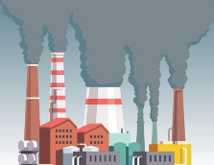

TEMATIKA 5: MJEDISI DHE SHËNDETI1. Njohim llojet e ndotjeve dhe i parandalojmë ato
Puno në klasë
Ndihmë: si të punoj?
Zgjidh të gjitha përgjigjet e sakta. Mund të zgjedhësh më shumë se një. Kur të mbarosh, shtyp butonin “Dërgo”.
1.
Shiko figurat dhe lexo përshkrimin e tyre.
Për secilën figurë, zgjidh të gjitha llojet e ndotjes që shkakton.

Shembull: Figura 1 shkakton ndotje të ajrit dhe zhurmë.